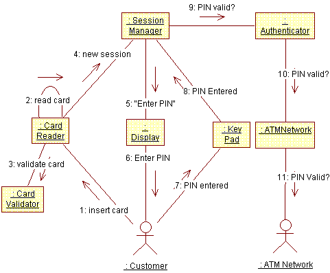

| Рекомендация: Практический семинар по анализу вариантов использования |
 |
|
| Связанные элементы |
|---|
ВведениеАнализ вариантов использования, выполняемый в качестве групповой задачи, важен на ранних итерациях для создания группы и для получения общего представления об архитектуре системы. Это важная точка перехода в итерации, поскольку она позволяет перейти от пользовательского видения системы (представляемого вариантами использования) к представлению проектировщиков (аналитическим классам). На последующих итерациях или с более опытной группой анализ вариантов использования может выполняться скорее как индивидуальная задача (если она вообще будет выполняться). Если существует хорошо согласованная модель проектируемой системы, то возможно, не стоит искать новые объекты, поскольку любое поведение системы, требуемое новыми вариантами использования, возможно, можно смоделировать с помощью существующих классов. Необходимые знанияСеминар должен быть организован как мозговая атака, во время которой требуется, чтобы участники обладали знаниями в различных сферах, таких как:
Ограничьте состав 6 - 7 участниками, так как при большей численности группы не все участники будут активны. Необходимое оборудование
Необходимое времяПри планировании на каждый вариант использования отведите в среднем несколько часов. Как правило, на анализ каждого последующего варианта будет уходить меньше времени, чем на анализ предыдущего, так как число новых классов будет уменьшаться, а опыт, накапливаемый участниками, будет увеличиваться. РолиРаспределите роли между участниками семинара. Рекомендуется передавать обязанности от участника к участнику, чтобы каждый мог попробовать себя в разных ролях.
Ход семинараУчастники последовательно рассматривают поток событий варианта использования. Для каждого поведения, определенного в рамках этого варианта использования, идентифицируется объект, предоставляющий это поведение. Этот объект может быть экземпляром уже существующего класса или классом, который необходимо будет создать. Руководитель рисует на доске диаграмму соединения, а все остальные участвуют в обсуждении. После того как диаграмма вариантов использования создана, необходимо сделать ее копию на листе формата A3 или A4 в тех же цветах, что и на доске. Одновременно документируются обязанности объектов на листах бумаги формата A3/A4 (формат документа описывается в пункте "Настройка" в разделе Рабочий продукт: Аналитический класс). Напишите полномочия (обязанности), события и имена соответствующих классов на стикерах; это упростит процедуру передачи обязанностей от одного участника другому. Рисование диаграмм соединенияСледующие соглашения упрощают чтение диаграмм и работу с ними во время семинара.
Нарисуйте одну диаграмму для основного потока событий варианта использования и дополнительные диаграммы - для дополнительных потоков. Для простых вариантов использования может быть достаточно одного представления.  Пример диаграммы соединения для варианта использования Идентифицировать пользователя в банкомате. |
© Copyright IBM Corp. 1987, 2006. Все права защищены.. |